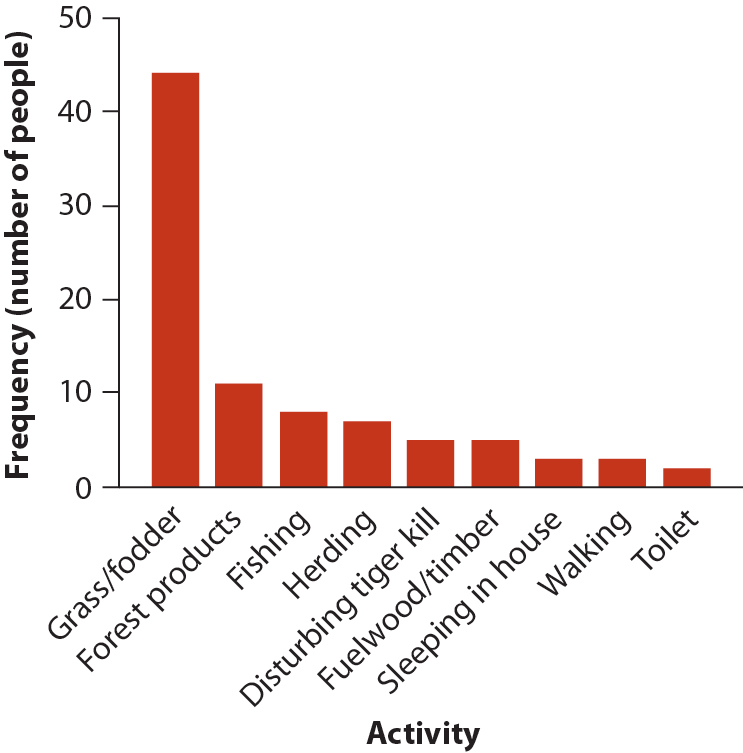
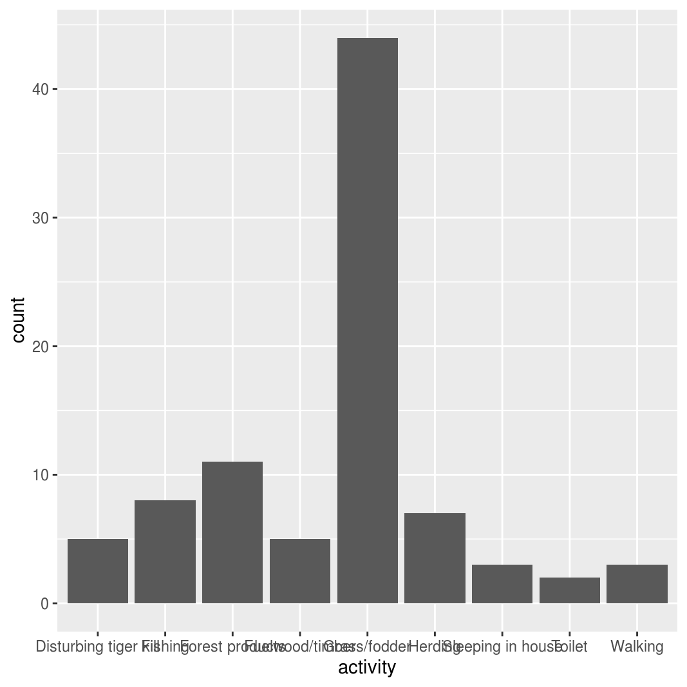
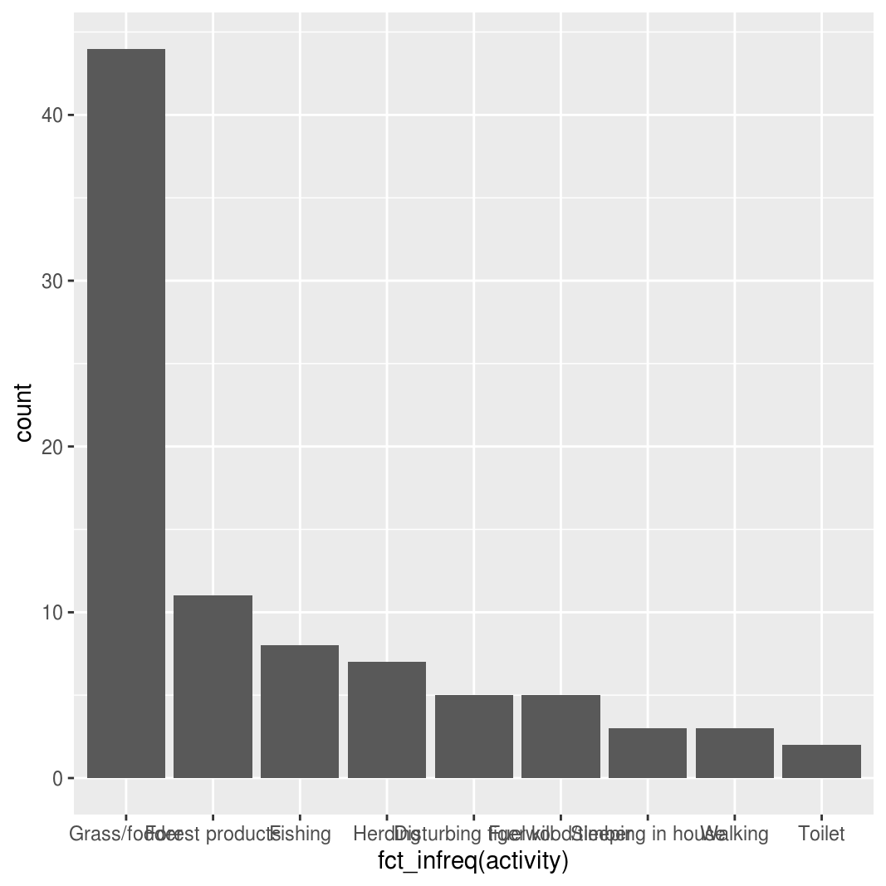
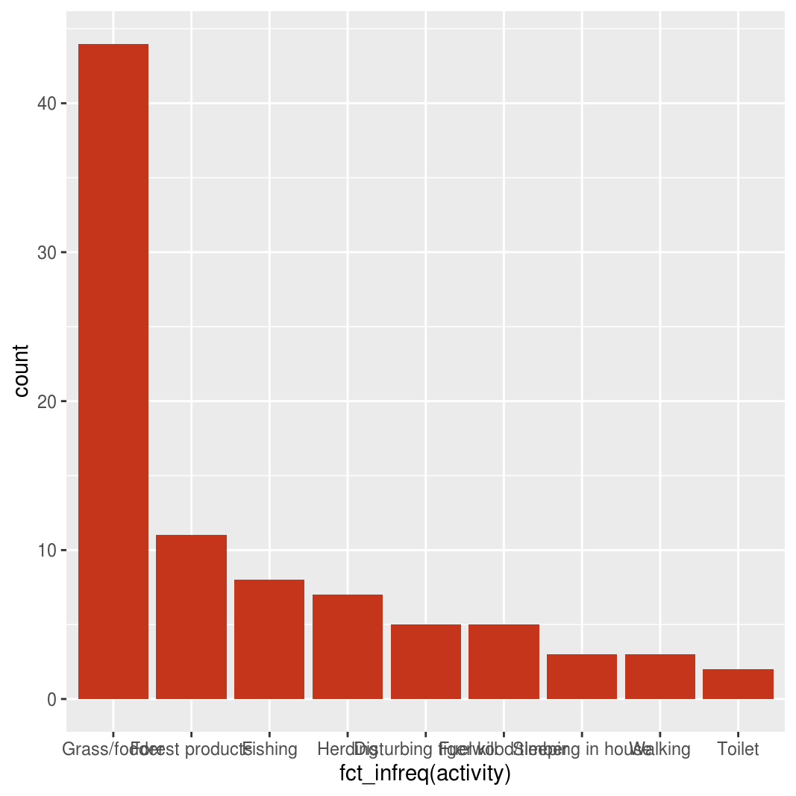
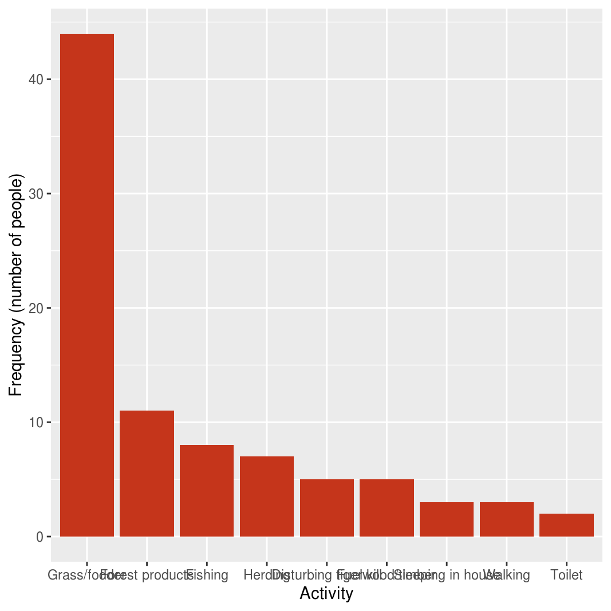

3 Introduction to ggplot2
3.1 Objectives
Learn to:
Load ggplot2 and other tidyverse packages
-
Understand the layered grammar of graphics:
- Create a blank plot using the
ggplot()function - Add geometric objects using the
geom_*()family of functions - Define an aesthetic mapping for a project using the
aes()function - Apply a statistical transformation using the
stat_*()family of functions - Add labels to a ggplot using the
labs()function
- Create a blank plot using the
-
Create a graph showing the distribution of a single variable
- Create a bar chart for a categorical variable using the
geom_col()andgeom_bar()functions - Arrange the categories in a bar chart by frequency
- Create a histogram for a numerical variable using the
geom_histogram()function - Choose and set appropriate histogram bin widths
- Create a bar chart for a categorical variable using the
Set the image width for an R Markdown code chunk
3.2 Introduction
This lab will introduce you to visualizing data using ggplot2.
R has other systems for creating graphs, such as the plotting functions included with base R. At times you may end up searching online for help with you R code. Be sure to add ggplot to any of your search terms so that you end up finding solutions that fit within the requirements of this course.
The instructions below correspond to sections 1, 2, 3, and 6 in the Data visualisation chapter of your lab manual, R for Data Science. If the steps below do not make sense on their own, please read those sections.
3.3 Project Setup
For this lab you will work in a new RStudio Project under git version control. Here are the steps you should follow to set up your Project:
-
Claim your repository
Go to the course D2L page
Find the Content module for this lab
-
Follow the link to claim your repository (repo) on GitHub
Note: this link will not appear until the day of your lab. If you want to get ahead, you can always try reading the Data visualisation chapter ahead of time
Copy the URL for your newly created repository
-
Create a new project
- Open RStudio
- Click New Project… on the File menu or Project menu (upper right)
- In the dialog window, select Version Control and then Git
- Paste the URL for your repo
- Hit tab to autofill the Directory name field. If it does not autofill, then type in the name of your repository as best you can (include the word “lab”, the lab number, and your name)
- Click the Browse button and find a good place on your hard drive for this project to live
- Set your Project options. When the project opens, go to Tools > Project Options… and change the first three drop down menus to “No” (see Project Options for detailed instructions and rationale)
-
Create a new script
Click the New File button (upper left) or go to File > New File
Select “R script”
Immediately save your script with a useful name, for example
tutorial-walk-through.R
For the rest of the lab, you will copying code from this website and paste it into your R script. Only later, after you have a working R script, will you copy anything into your lab report R Markdown document.
3.4 Load packages
ggplot2 is one of the core packages in the tidyverse. In the code below, you will load the ggplot2 package and other tidyverse packages. Before you do, get your script off to a nice start by adding a code section. Code sections keep your code organized and makes it easy to jump to specific code sections without scrolling. In a long script, this can be a real time saver. The Code Sections chapter has more details, but for now you can just follow these instructions:
- Go to Code > Insert Section… or use the keyboard shortcut Ctrl+Shift+I / Cmd+Shift+I
- Type “load packages” in the dialog window and click the OK button
As you work through the tutorials, add other code headings as necessary.
Load the tidyverse package by adding this code below the new code section and running it:
That line of code loads the tidyverse package and the eight core packages within the tidyverse, one of which is ggplot2. The vast majority of your data science needs can be met with those eight packages. While it is possible to load each package individually, for example library(ggplot2), it’s usually better to load the tidyverse package because its not often that you only want to use one of the packages in the tidyverse.
When you run the code, you will see a message in the console like this:
#> ── Attaching packages ─────────────────────────────────────── tidyverse 1.3.0 ──
#> ✔ ggplot2 3.3.3 ✔ purrr 0.3.4
#> ✔ tibble 3.0.5 ✔ dplyr 1.0.3
#> ✔ tidyr 1.1.2 ✔ stringr 1.4.0
#> ✔ readr 1.4.0 ✔ forcats 0.5.0
#> ── Conflicts ────────────────────────────────────────── tidyverse_conflicts() ──
#> ✖ dplyr::filter() masks stats::filter()
#> ✖ dplyr::lag() masks stats::lag()The first part tells you which packages are being loaded. You will notice ggplot2 is on that list. The second part of the message tells you which tidyverse functions conflict with (and override) other functions. Usually those other functions are from base R, but they could also be functions from other packages you had already loaded. If you ever want to use a package that has been overridden with another package, you have to refer to it explicitly by its package and function name.
3.5 Bar graphs
Bar graphs are used to show the distribution of a single categorical variable.
3.5.1 Example: tiger data
We will use the data from Example 2.2A in your textbook for this activity. The summary from the textbook is as follows:
Conflict between humans and tigers threatens tiger populations, kills people, and reduces public support for conservation. Gurung et al. (2008) investigated causes of human deaths by tigers near the protected area of Chitwan National Park, Nepal. Eighty-eight people were killed by 36 individual tigers between 1979 and 2006, mainly within 1 km of the park edge. Table 2.2-1 lists the main activities of people at the time they were killed. Such information may be helpful to identify activities that increase vulnerability to attack.
The dataset consists of one table showing the activities of 88 people at the time they were attacked and killed by tigers near Chitwan National Park, Nepal, from 1979 to 2006.
You can view and explore the data using this interactive table:
Each row in the table represents a sample unit, or person. Thus the sample size is 88.
The variables are:
person. a number from 1 to 88 identifying which person the data pertains to. While this variable contains a number, it is incorrect to call it a numeric variable. The number was not measured, and it cannot have mathematical functions applied to it such as calculating the mean. The value is really no different than a person’s name, which would consist of text. Therefore it is best to consider person a categorical variable.
activity. the person’s activity at the time they were attacked and killed. This is a categorical variable with a discrete number of possible values.
For our purposes, the only variable of interest is activity. We will not use the person variable.
3.5.2 Read the tiger data
The next step in your R script is to read the data into R.
First, create a new code section named “deaths from tigers”
The data for this and other examples from your textbook can be found on the book website. It is stored as a comma-separated values file (.csv).
Read the data from the textbook website using the read_csv() function, part of the readr package, and assign it to an object named tiger_data using the left assignment operator <- :
tiger_data <- read_csv("https://whitlockschluter.zoology.ubc.ca/wp-content/data/chapter02/chap02e2aDeathsFromTigers.csv")
#>
#> ── Column specification ────────────────────────────────────────────────────────
#> cols(
#> person = col_double(),
#> activity = col_character()
#> )The message you get in your console tells you how the data in the CSV was parsed (interpretted) when it was read into R. You can ignore it for now.
3.5.3 View the tiger data
You will notice that the data itself did not appear in the console. That’s because we assigned it to an object but did not print it. To print the data in the console, type the name of the object into your R script and run it:
tiger_data
#> # A tibble: 88 x 2
#> person activity
#> <dbl> <chr>
#> 1 1 Disturbing tiger kill
#> 2 2 Forest products
#> 3 3 Grass/fodder
#> 4 4 Fuelwood/timber
#> 5 5 Grass/fodder
#> 6 6 Forest products
#> # … with 82 more rowsNotice that the output in the console indicates the object is a tibble (a tidyverse name for a table of data) with 88 observations (rows) and 2 variables (columns).
You can view a list of distinct values taken by a categorical variable by using the distinct() function, which returns a table of distinct values taken by the variable. The first argument to the function is the name of the data, the second argument is the name of the variable:
distinct(tiger_data, activity)#> # A tibble: 9 x 1
#> activity
#> <chr>
#> 1 Disturbing tiger kill
#> 2 Forest products
#> 3 Grass/fodder
#> 4 Fuelwood/timber
#> 5 Fishing
#> 6 Herding
#> 7 Sleeping in house
#> 8 Walking
#> 9 Toilet3.5.4 Contingency table
If you want to see how many times each value of activity occurs in the data, you can create a contingency table using the count() function. Again, the data object is the first argument and the variable name is the second argument.
count(tiger_data, activity)
#> # A tibble: 9 x 2
#> activity n
#> * <chr> <int>
#> 1 Disturbing tiger kill 5
#> 2 Fishing 8
#> 3 Forest products 11
#> 4 Fuelwood/timber 5
#> 5 Grass/fodder 44
#> 6 Herding 7
#> # … with 3 more rowsAs you can see, this function returns another tibble that has two variables: the original one activity and a new one n, which represents the number of times the variable occurred in the data.
3.5.5 Make a bar graph
The distribution of a single categorical variable is best visualized using bar graph (also called a bar chart, barchart, or column graph). In this section, you will learn how to create a bar graph.
ggplot uses a layered approach to building a graph. You will learn more about what this means as you build your first graph using the tiger data. Your goal is to create a bar graph similar to the one in the textbook in Figure 2.2-1, which looks like this:

The first step is to create a new ggplot using the ggplot() function. The first (and for now, only) argument is the data argument. You should set it to the data object you created above. Now run the code:
ggplot(data = tiger_data)When you plot something in RStudio (i.e. when you create a graph), it will appear in the Plots tab in the lower right pane.
Look at the Plots tab. What do you see? At first you may think it is a blank screen, but actually it is a gray box representing the empty plot. At this point, R knows you want to plot the tiger data, but it doesn’t know which variables to plot or how to display the data.
To display the data, we need to add a geometric object. In this case, because we want a bar graph, we will use the geom_bar() function. You add the geometric object to the canvas using a plus sign like this:
ggplot(data = tiger_data) +
geom_bar(mapping = aes(x = activity))
The first (and for now, only) argument to geom_bar() is mapping, an aesthetic mapping that tells R which variables in the data table map to which parts of the graph. An aesthetic mapping is defined by the aes() function. geom_bar() requires only one aesthetic, the argument x, which tells R which variable to put on the x axis. We want to put the activity variable on the x axis, so we set x = activity . Put this all together, and the way to add a bars to the graph is geom_bar(mapping = aes(x = activity)
The result figure, shown above, should look similar to the one in Figure 2.2-1 of your textbook. With a couple of notable exceptions:
The columns should be ordered by height
The color should be red
The axis labels “count” and “activity” should be changed to something more informative
-
Various theme elements could be improved:
- The font size should be larger
- The axis labels should be bold
- The axis tick labels (the activity names) should be rotated 45 degrees
- The axis ticks should be removed
Let’s fix each of those issues in turn.
First, arrange the levels (categories) of activity in descending order by count (i.e. big columns on the left), using a bit of wizardry from the forcats package, one of the core packages in the tidyverse that was loaded when you loaded the tidyverse package. The fct_infreq() function changes a variable to factor with the levels defined by how frequently they occur in the data. Inside the aes() function, change x = activity to x = fct_infreq(activity).
ggplot(data = tiger_data) +
geom_bar(mapping = aes(x = fct_infreq(activity)))
Second, change color of the columns by adding a fill argument to geom_bar(). Put a comma after the closing parenthesis of the aes() function and add fill =. For the fill color, you could try "red" or "darkred", but for an exact match use the hex color "#C5351B".
ggplot(data = tiger_data) +
geom_bar(mapping = aes(x = fct_infreq(activity)), fill = "#C5351B")
Third, add better x- and y-axis labels using the labs() function. Axis labels should start with capital letters and, for numeric variables, should include the units of measurement in parentheses. The argument x sets the x-axis label while the argument y sets the y-axis label. The label text itself should appear in quotation marks. The x and y arguments should be separated by a comma.
ggplot(data = tiger_data) +
geom_bar(mapping = aes(x = fct_infreq(activity)), fill = "#C5351B") +
labs(x = "Activity", y = "Frequency (number of people)")
Fourth, fix the look of the graph by using:
scale_y_continuous()to set the y-axis limits to 0 and 50, with no buffertheme_classic()to remove the background color, adds axis lines, and increases the base font size-
theme()to change various other theme elements such as:Make the axis labels bold
Make the x- and y-axis text black and larger
Make the x-axis text angled and right justified
Remove the x-axis tick marks
Compare your figure to the original above. Not bad! This one, however, can be inserted into any document at any size and resolution. And most importantly, your code documents how you created the graph, ensuring the figure could be reproduced by anyone.
Note that you could get pretty close with just the first three lines of code and perhaps the one theme element to rotate the axis text labels.
3.6 Histograms
Histograms are used to show the distribution of a single numerical variable.
Now that you know the basics creating a ggplot, creating a histogram will require relatively little explanation.
3.6.1 Example: bird data
We will use the data from Example 2.2B in your textbook for this activity. The summary from the textbook is as follows:
How many species are common and how many are rare? One way to address this question is to construct a frequency distribution of species abundance. The data in Table 2.2-2 are from a survey of the breeding birds of Organ Pipe Cactus National Monument in southern Arizona, USA. The measurements were extracted from the North American Breeding Bird Survey, a continent-wide data set of estimated bird numbers (Sauer et al. 2003)
The dataset consists of one table showing the abundance of NN species in Organ Pipe National. Monument.
You can view and explore the data using this interactive table:
Each row in the table represents a sample unit, or person. Thus the sample size is 88.
The variables are:
species. the name of the bird species, a categorical variable.
abundance. the species’s abundance, a numerical variable consisting of positive integers.
For our purposes, the only variable of interest is abundance. We will not use the species variable.
3.7 Your assignment
- Open the R script titled
lab-assignment-script.R - Follow the directions to create an R script that produces the requested figures
3.8 Your lab report
- Open the R script titled
lab-assignment-script.R - Your instructor has seeded your repository with an R Markdown document for your lab report, titled lab-report.Rmd. Open this file
- Update the YAML header with your name
- Copy the code for the requested figures into the appropriate R code chunks
- Add text to answer each questions. Make your text bold so it is easily readable.
3.9 Grading Rubric
You will be assessed based on the following rubric:
GitHub Classroom repository claimed
-
R script
-
Good organization
Code sections make sense
-
Code goes in correct order, e.g.
- load packages before using them
- read or load data before using it
-
Has sufficient comments
- At top, explain purpose of the script
- Section headings throughout
- Each code chunk has a comment
Code for plots works
-
-
R Markdown document
- Correct YAML header
- Good organization
- Sufficient explanatory text for each figure
- Questions answered correctly
- Answers marked in bold
Your lab report has been peer-reviewed at least once
Submitted link to repository on D2L